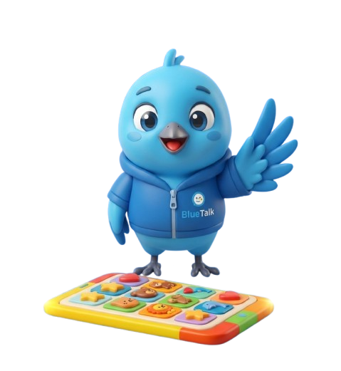

Que cada niño tenga su voz.
BlueTalk es una app de comunicación aumentativa (AAC) para niñas y niños autistas. Funciona sin conexión, sin cuentas y sin anuncios: los datos se quedan en el teléfono.
Descargar APK betaAndroid 7.0 o superior · 20 MB · 19/10/2026

Escanea con el teléfono
Apunta la cámara al código y abre el enlace. La descarga empieza en la página.
https://limitcodev.github.io/bluetalk-beta/
Comunicador
Pictogramas que hablan al tocarlos. El vocabulario nuclear siempre está en el mismo lugar.
Rutinas y Primero–Luego
Pasos visuales para anticipar el día y reducir la ansiedad.
Juegos y emociones
Actividades tranquilas para aprender jugando, con modo calma.
Modo adulto
Panel para la familia o el terapeuta, protegido y separado del modo niño.
Cómo instalar
- Descarga el APK con el botón o el código QR.
- Abre el archivo descargado.
- Si Android lo pide, permite «instalar apps desconocidas» para tu navegador o gestor de archivos y vuelve atrás.
- Si Play Protect avisa, toca Instalar de todas formas (el texto pequeño), no «Entendido».
- Espera a «App instalada» y abre BlueTalk.
¿Por qué avisa Android?
Android avisa con cualquier APK que no venga de Play Store, aunque esté firmado.
Es normal. Evita enviarlo por WhatsApp: ese chat añade su propio aviso a todo archivo .apk.